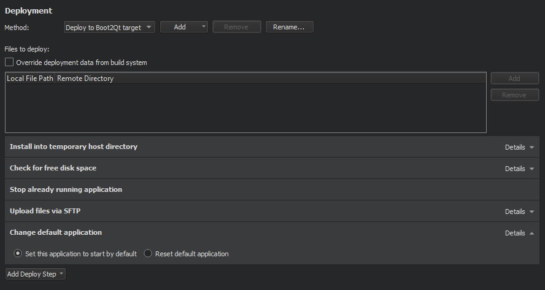

Deploying Applications to Boot2Qt Devices
You can specify the generic deployment steps for remote Linux devices also for Boot2Qt devices.

For more information, see Generic Deployment Steps.
In addition, to have your application launch on boot, select Add Deploy Step > Change Default Application.